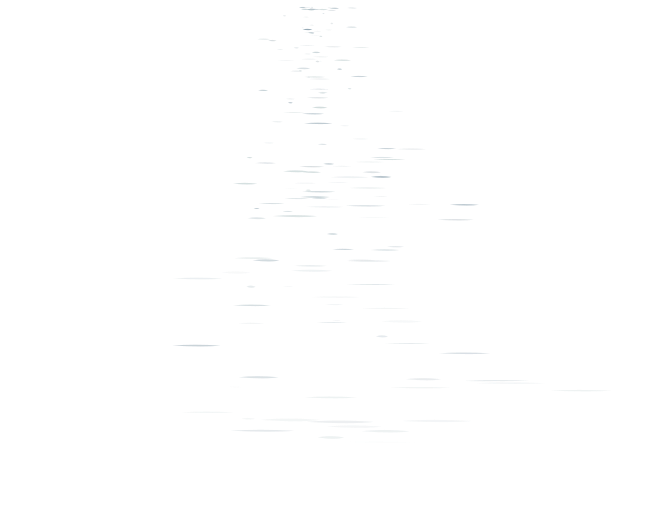
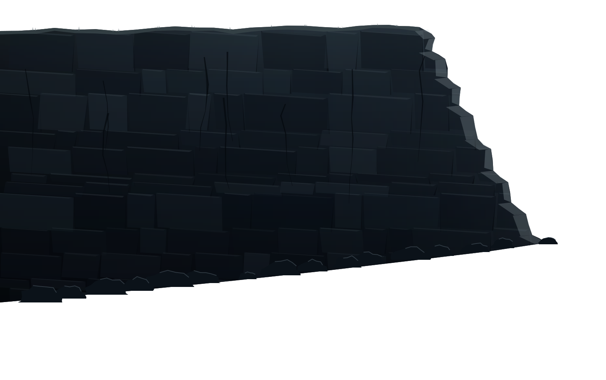
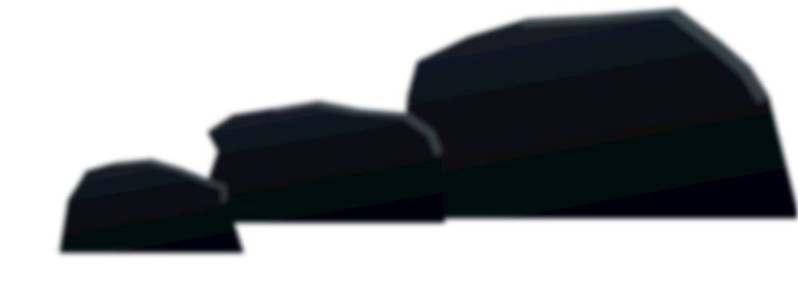

<!doctype html>
<!-- One Night, shot 3. The reverse view from the water: the walker is a small figure on a tall sea cliff,
     and the camera pulls back to reveal its scale. It opens on the walker at the screen position he
     held at the end of shot 2, so the eye finds him across the reverse cut, then eases back.
     All movement is evaluated on the local scene clock. -->
<meta charset="utf-8">
<style>
/* Independent coastal plates and fixed-size character drawings. */
#world, .plane { width:1920px; height:1080px; position:absolute; }
img { position:absolute; object-fit:fill; }
.shimmer-a { animation: sheen-a 2.5s ease-in-out infinite; }
.shimmer-b { animation: sheen-b 2.5s ease-in-out infinite; }
@keyframes sheen-a {
  from { transform:translate(-5px,0px); opacity:.62; }
  50% { transform:translate(5px,2px); opacity:.91; }
  to { transform:translate(-5px,0px); opacity:.62; }
}
@keyframes sheen-b {
  from { transform:translate(4px,0px); opacity:.74; }
  50% { transform:translate(-4px,2px); opacity:.40; }
  to { transform:translate(4px,0px); opacity:.74; }
}
#man { position:absolute; }
.shadow { position:absolute; background:radial-gradient(ellipse farthest-side, #02060bbd, #05091060 42%, transparent 100%); }
.surf-a { animation: swell-a 3.2s ease-in-out infinite; }
.surf-b { animation: swell-b 3.2s ease-in-out infinite; }
@keyframes swell-a {
  from { transform:translate(0px,0px); opacity:.85; }
  50% { transform:translate(-8px,3px); opacity:.25; }
  to { transform:translate(0px,0px); opacity:.85; }
}
@keyframes swell-b {
  from { transform:translate(-6px,3px); opacity:.2; }
  50% { transform:translate(2px,0px); opacity:.8; }
  to { transform:translate(-6px,3px); opacity:.2; }
}
</style>
<main data-composition-id="night" data-width="1920" data-height="1080" data-duration="5" style="background:#070c15">
  <div id="world" data-hf-shots='[{"preset":"reveal","duration":4.6,"zoom":1,"to":[0,0],"from":{"zoom":1.55,"x":-236,"y":-346}},{"preset":"static"}]'>
  <div class="plane" data-hf-parallax="0.15">
    <div style="position:absolute;left:-300px;top:600px;width:2520px;height:400px;background:#445160"></div>
    
    
  </div>
  <div class="plane" data-hf-parallax="0.4">
    
    
    
    
    
  </div>
  <div class="plane" data-hf-parallax="1">
    
    
    
    
  </div>
    <div id="man" style="left:690px;top:257px;width:18.9px;height:34px" >
      
    </div>
  <div class="plane" data-hf-parallax="1.35">
    
  </div>
  </div>
  <div style="position:absolute;width:1920px;height:1080px;background:#000" data-track-index="10" data-hf-keyframes='[{"at":0,"opacity":0},{"at":3.6,"opacity":0},{"at":4.94,"opacity":1,"easing":"ease-in-out"}]'></div>
</main>
